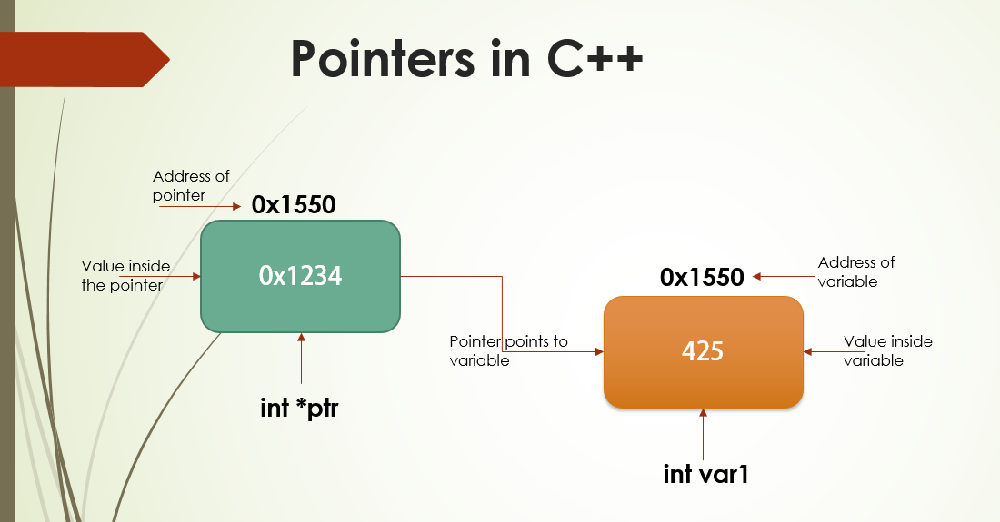
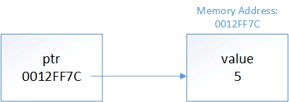

References & Pointers
Khiem Nguyen
Lecturer in Multiscale Materials
khiem.nguyen@glasgow.ac.uk
Introduction to pointers
Memory and address
➥ Consider a normal variable like this:
Behind the scene
- When this code is executed, a piece of memory from RAM will be assigned to this object.
- The variable
xis (hypothetically, see the figure before) assigned memory address0x1234. - Whenever we use the variable
x, the program will go to the memory0x1234to access the value stored there.
The address-of operator (&): The ampersand character
➥ The address-of operator (&) returns the memory of address of its operand.
address_of_operator_example.cpp
➥ Let us run this code snippet.
- Memory addresses are typically printed as hexadecimal values.
- For objects that use more than one byte of memory, address-of will return the memory address of the first byte used by the object.
The dereference operator (*): The asterisk character
➥ The **dereference operator (*)** (also occasionally called the indirection operator) returns the value at a given memory address as an lvalue.
dereference_operator_example.cpp
#include <iostream>
int main()
{
double x{ 5 };
std::cout << x << '\n'; // print the value of variable x
std::cout << &x << '\n'; // print the memory address of variable x
// print the value at the memory address of variable x
// (parentheses not required, but make it easier to read)
std::cout << *(&x) << '\n';
return 0;
}➥ Let us run this code snippet.
Address-of and dereference operators: Some points to note
Key insight
The address-of operator (&) and dereference operator (*) work as opposites: address-of gets the address of an object, and dereference gets the object at an address.
Regarding the ampersand
The & may cause confusion because it has different meanings depending on context:
When following a type name,
&denotes an lvalue reference:➜
int& ref.When used in a unary context in an expression,
&is the address-of operator:➜
std::cout << &x.When used in a binary context in an expression,
&is the Bitwise AND operator:➜
std::cout << x & y.
Pointers
A pointer is an object that holds a memory address (typically of another variable) as its value.
Pointers
A pointer is an object that holds a memory address (typically of another variable) as its value.
➥ A type that specifies a pointer is called a pointer type.
➥ Pointer types are declared using an asterisk (*).
Pointers: Example
pointer_example.cpp
#include <iostream>
int main()
{
double x { 42 }; // normal variable
double& ref { x }; // a reference to a double (bound to x)
double* ptr1; // a pointer to a double
ptr1 = &x;
std::cout << "ptr1 = " << ptr1 << '\n'; // show some address
std::cout << "value stored at ptr1 = " << *ptr1 << '\n';
double* ptr2 = &ref;
std::cout << "ptr2 = " << ptr2 << '\n';
std::cout << "value stored at ptr2 = " << *ptr2 << '\n';
return 0;
}➥ Let us run this code snippet.
Question: What would you expect to see?
Note: The asterisk is part of the declaration syntax for pointers, not the use of dereference.
Pointers: Declare multiple pointers in one line
We generally should not declare multiple variables on a single line.
If we do, the asterisk has to be included with each variable.
Pointers: Demonstration

This is an excellent demonstration of a pointer in C++
Pointer initialization
A pointer that has not been initialized is sometimes called a wild pointer.
Always initialize your pointers.
Pointer initialization
- A pointer that has not been initialized is sometimes called a wild pointer.
- Wild pointers contain garbage address.
- Dereferencing a wild pointer will result in undefined behavior (pretty much like using uninitialized variables)
Best practice
Always initialize your pointers.
initialize_pointers.cpp
Pointer initialization
➥ Since pointers hold addresses, when we initialize or assign a value to a pointer, that value has to be an address – Just common sense.
initialize_pointers_using_addresses.cpp
Pointer initialization: Demonstration

Repeat the pointer concept in figure
This is where pointers get their name from:
ptris holding address ofx.ptris pointing tox.
Pointers and Assignment
Because pointers are objects, we can perform assignment on them.
Pointers and assignment
Use assignment with pointers in two ways:
- To change what the pointer is pointing at: Assign the pointer a new address.
- To change the value being pointed at: Assign the dereferenced pointer a new value
assign_pointer_to_new_address.cpp
#include <iostream>
int main()
{
double x { 42.0 };
double* ptr{ &x }; // ptr initialized to point at x
std::cout << *ptr << '\n'; // print the value at the address being pointed to (x's address)
double y{ 24.0 };
ptr = &y; // // change ptr to point at y
std::cout << *ptr << '\n'; // print the value at the address being pointed to (y's address)
return 0;
}➥ Let us run this code snippet. Question Write code to change the value of x to 24 via using ptr.
Pointers and assignment
change_value_using_dereference.cpp
#include <iostream>
int main()
{
double x{ 42 };
double* ptr{ &x }; // initialize ptr with address of variable x
std::cout << x << '\n'; // print x's value
std::cout << *ptr << '\n'; // print the value at the address that ptr is
// holding (x's address)
*ptr = 24; // The object at the address held by ptr (x)
// assigned value 24 (note that ptr is dereferenced here)
std::cout << x << '\n';
std::cout << *ptr << '\n'; // print the value at the address that ptr is
// holding (x's address)
return 0;
}Pointers and assignment: Key insight
Key insight
When we use a pointer without a dereference (
ptr), we are accessing the address held by the pointer. Modifying this (ptr = &y;) changes what the pointer is pointing at.When we dereference a pointer (
*ptr), we are accessing the object being pointed at. Modifying this (*ptr = 6;) changes the value of the object being pointed at.
At this point, you should already feel:
Pointers behave much like lvalue references
Pointers behave much like lvalue reference
Important to note: pointer is not lvalue reference. But we can write code like this:
pointers_behave_like_references.cpp
#include <iostream>
int main()
{
int x{ 5 };
int& ref { x }; // get a reference to x
int* ptr { &x }; // get a pointer to x
std::cout << x;
std::cout << ref; // use the reference to print x's value (5)
std::cout << *ptr << '\n'; // use the pointer to print x's value (5)
ref = 6; // use the reference to change the value of x
std::cout << x;
std::cout << ref; // use the reference to print x's value (6)
std::cout << *ptr << '\n'; // use the pointer to print x's value (6)
*ptr = 7; // use the pointer to change the value of x
std::cout << x;
std::cout << ref; // use the reference to print x's value (7)
std::cout << *ptr << '\n'; // use the pointer to print x's value (7)
return 0;
}➥
Pointers behave much like lvalue reference: Figure demonstration

But references are not pointers
There are some other differences between pointers:
| References | Pointers |
|---|---|
| must be initialized | not required to be initialized |
| are not objects | are objects |
| cannot be reseated | can change what they are pointing at |
| must always be bound to an object | can point to nothing (null pointer) |
| “safe” (outside of dangling reference) | are inherently dangerous (we’ll discuss in the next lesson) |
The address-of operator returns a pointer
The address-of operator returns a pointer
- The address-of operator does not return the address of its operand as a literal.
- It returns a pointer to the operand (whose value is the address of the operand).
➥ Example: Given variable int x, &x returns an int* holding the address of x.
address_of_returns_pointer.cpp
➥ Let us run this code snippet. Question: What do you think about the size of pointers?
The size of pointers
The size of a pointer is dependent upon the architecture the executable is compiled for:
- a pointer on a 32-bit machine is 32 bits (4 bytes)
- a pointer on a 64-bit machine is 64 bits (8 bytes)
This is true regardless of the size of the object being pointed to.
➜ This is just common sense: A pointer is just a memory address, and the number of bits needed to access a memory address is constant.
The size of pointers
size_of_pointers.cpp
#include <iostream>
int main() // assume a 32-bit application
{
char* char_ptr{}; // chars are 1 byte
int* int_ptr{}; // ints are usually 4 bytes
long double* ld_ptr{}; // long doubles are usually 8 or 12 bytes
std::cout << sizeof(char_ptr) << '\n'; // prints 8 on my computer
std::cout << sizeof(int_ptr) << '\n'; // prints 8
std::cout << sizeof(ld_ptr) << '\n'; // prints 8
return 0;
}➥ Let us run this code snippet.